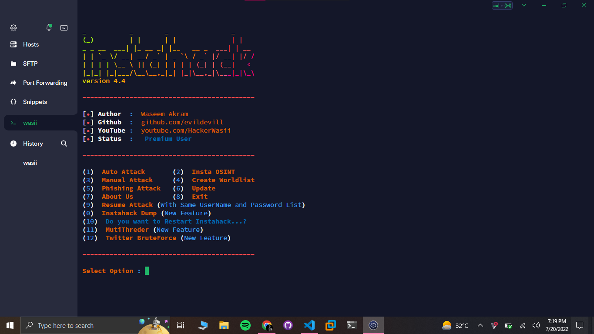
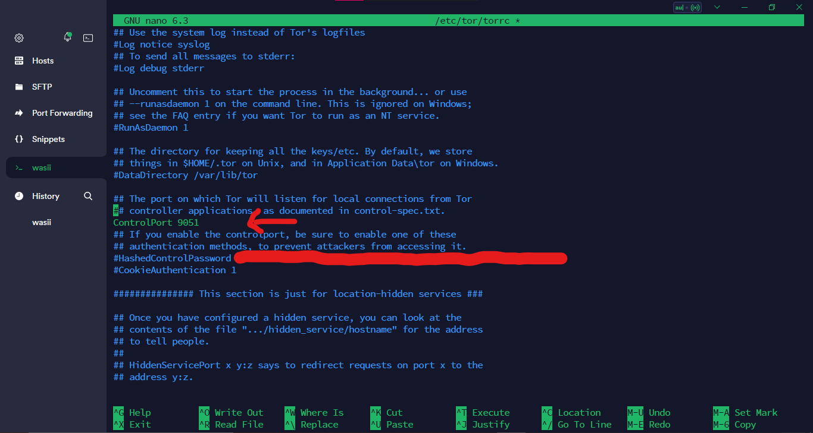
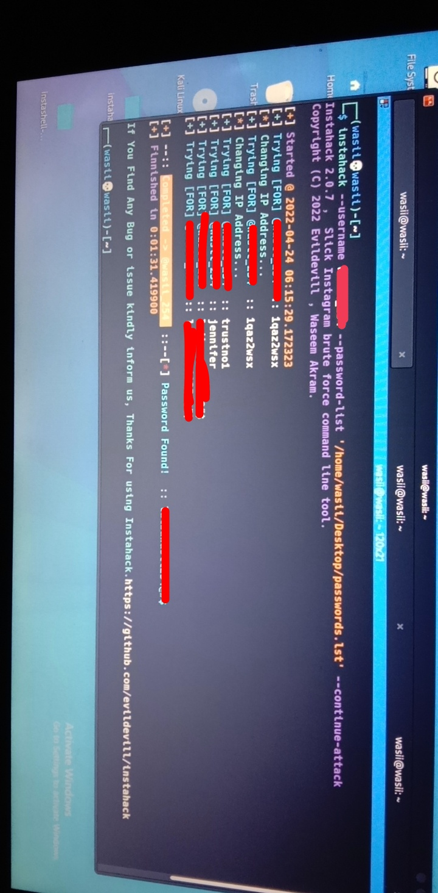

About instahack
instahack is a bash and python based script which is officially made to test password strength of Instagram account from termux and kali with bruteforce attack and. it based on tor This tool works on both rooted Android device and Non-rooted Android device. Best Tool For Instagram Bruteforce hacking Tool By Waseem Akram. Made in Bash and python

How instahack works
instahack use, tor to change our ip. once ip blocked for many tries and continue attack. Since the official api is not a hacker wants, So we use the InstagramAPK signature to stay anonymous! And instahack also save the progress so that even in network interruption we can avoid breaking the computer!
Instahack is a python and bash script to perform brute force attack against Instagram , this script can bypass login limiting on wrong passwords , so basically it can test infinite number of passwords. Instahack is proved and can test over 6M passwords on a single instagram account with less resource as possible. This script mimics the activities of the official instagram android app and sends request over tor so you are secure, but if your tor installation is misconfigured then the blame is on you.
Features of instahack
- instahack Scripting
- Insta OSINT
- Multi Thrading
- Phishing Attack
- Resumes Attacks when the same wordlist is used on the same Username
- Maximum Customization! ( This includes multiple attack vectors! )
- Fast and Clean Code , no ugly selenum drivers! ( Pure Requests )
- Elegant Tor Identity Change with Stem ( Tor's Official Library for Python )
- Dumps successfully cracked accounts in the dump
Requirements
requests, requests[socks], stem, tor, terminaltablesWatch a video
Installation on Termux
apt-get update -y
apt-get upgrade -y
apt-get install python -y
apt-get install python2 -y
apt-get install git -y
apt-get install wget -y
apt-get install curl -y
git clone https://github.com/evildevill/instahack.git
cd instahack
bash instahack.shInstallation on Linux
sudo apt-get update -y
sudo apt-get upgrade -y
sudo apt-get install python -y
sudo apt-get install python2 -y
sudo apt-get install git -y
sudo apt-get install wget -y
sudo apt-get install curl -y
git clone https://github.com/evildevill/instahack.git
cd instahack
bash instahack.shConfiguring Tor
open your tor configuration file usually located at /etc/tor/torrc
sudo nano /etc/tor/torrc
Now Save The file using CTRL + S and then exit using
CTRL + X
Now generate instahack configuration file using. now you are ready to crack any instagram
account , make sure your tor configuration matched instahack-config.json
instahack -cc -dcbash instahack.shYou can buy this tool using Gumroad Buy Now After purchasing enter your license then select option according to your need. Enter target Username then chose wordlist then hit enter. Now it test all the passwords if instahack find password successfully then it will automatically stops and give you the password.👻😉

Finally 😍😘, we have successfully hack the target account